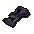

")
Herblore - Extra Features
Sinister Chest | Herb Gloves | Greenman's Ale | Summoning Familiars | Guthix Rest Tea
Sanfew Serum | Vials of Stench | Locators | Training Hints and Tips | Dungeoneering | Quests
Sanfew Serum | Vials of Stench | Locators | Training Hints and Tips | Dungeoneering | Quests
Sinister Chest

Upon opening the chest you will get poisoned, so it is a good idea to bring along an anti-poison of some type.
The chest contains a fixed set of nine cleaned herbs, which are:
- 2 x harralander
- 3 x ranarr
- 1 x irit
- 1 x avantoe
- 1 x kwuarm
- 1 x torstol
Herb Gloves
 |
 |
 |
 |
There are a few sets of gloves available from Fist of Guthix that anyone interested in Herblore should look to purchase. Irit, avantoe, kwuarm and cadantine gloves increase the chance that you will receive those herbs as drops instead of other herbs. Any time that you would receive a herb drop, there is a 50% chance that it will automatically be the same herb as your gloves. This has no effect on creatures like fever spiders, who only drop one type of herb. These gloves will crumble to dust after 100 drops of the same herb as your gloves.
You need a Herblore level of 50 to wear irit gloves, 60 to wear avantoe gloves, 70 for kwuarm gloves, and 80 for cadantine gloves.
Greenman's Ale
 It is worth noting that 'Greenman's Ale' temporarily increases your Herblore level by one. This can be purchased from the Dragon Inn (located in Yanille) brewed (please refer to the Cooking Guide) and bought from Jossik the Lighthouse keeper's store after completing Horror from the Deep.
It is worth noting that 'Greenman's Ale' temporarily increases your Herblore level by one. This can be purchased from the Dragon Inn (located in Yanille) brewed (please refer to the Cooking Guide) and bought from Jossik the Lighthouse keeper's store after completing Horror from the Deep.
Summoning Familiars
Using the Summoning skill, you'll find that there are a few familiars that might be useful for training your Herblore. Of particular note is the macaw, whose special move finds plenty of herbs.
Guthix Rest Tea
Each cup of Guthix Rest has three doses, each of which will do all of the following (though they will not stack):
- Reduce the effect of poisons
- Restore some run energy
- Boost life points by 50, even beyond your normal maximum
Sanfew Serum
To learn to make Sanfew Serum, you must have completed Zogre Flesh Eaters, and be interested in gathering some nail beast nails from Temple Trekking / Burgh de Rott Ramble. If you then speak to Sanfew, he will explain how to make this potion.
![[image: super restore potion]](../../img/main/kbase/items/potions/other_potions/superrestore_potion.gif "super restore potion") |
+ | ![[image: ground unicorn horn]](../../img/main/kbase/items/secondary_ingredients/groundunicornhorn.gif "ground unicorn horn") |
+ | ![[image: snake weed]](../../img/main/kbase/items/secondary_ingredients/snake_weed2.gif "snake weed") |
+ | ![[image: nail beast nails]](../../img/main/kbase/items/secondary_ingredients/beast_nails.gif "nail beast nails") |
= | ![[image: sanfew serum]](../../img/main/kbase/items/potions/other_potions/sanfew_serum.gif "sanfew serum") |
Sanfew Serum combines the effects of super restore, cure poison and cure disease potions all in one, as well as proving to be an effective weapon against the nail beasts themselves. Note that the effects are not as potent as the individual potions themselves.
Vials of Stench
Upon finishing the Thieves' Guild caper called A Guild of Our Own, you will be able to create a vial of stench by mixing a bowl of chopped onion into an unfinished irit potion. This vial of stench can be taken to Chief Thief Robin in the Thieves' Guild who will 'activate' it for you. Carrying this potion while stealing from stalls will enable you to immediately trade back your stolen goods to the very stallholder you lifted from, their watering eyes stopping them from identifying you as the thief.
Locators
 To get to your Herblore secondary ingredients areas quicker, you might want to consider purchasing a locator. These can be bought using reward credits in Mobilising Armies. Each officer of the officer tower can offer you a different level of locator.
By using the locator, you can choose to be teleported to a Mining, Woodcutting, Fishing or Herblore secondary ingredient area. Once you have made your choice, the locator will make some mysterious calculations and then teleport you randomly to a suitable spot. Try not to be wasteful: the locators have a limited number of charges and can only be refreshed by buying another or playing a game of Mobilising Armies.
Training Hints and Tips
- Zahur, who is located in Nardah, will clean your herbs for 200 gold pieces per herb.
- Although a Members' skill, Strength potions are available in the free-to-play worlds by visiting the Varrock Apothecary and trading him one limpwurt root, a red spider’s egg and 5gp. It is the only stat-boosting potion that can be traded in free-to-play.
- Remember that water-filled vials can be bought from stores. Ardougne general store is one of many places you can buy these from.
- Train your Herblore skill alongside Agility by visiting the Brimhaven Agility Arena, where you can trade your tickets for herbs. You could even adventure into the Yanille Agility Dungeon and be lucky enough to obtain the sinister key, from fighting Salarin the Twisted.
Herblore Training in Dungeoneering
It is possible to train all of your skills while dungeoneering, and Herblore is no exception. Herbs can be gained from monster drops or by farming, and, once clean, they are ingredients for useful potions. You can also gain Herblore experience by completing herblore skill doors.
- To find out more about skill doors and the basics of dungeoneering, please click here
- To find out about making potions in Daemonheim, click here
- To find tables with Herblore requirements and XP levels, click here
Quests Providing Herblore Experience
For quests that specifically give Herblore experience as a reward, please refer to the Herblore Rewards page.
Mini Quest

Once you have completed the quest, you will need to return to the Troll Stronghold basement storeroom and hide from the guards between the crates and boxes; then take your chance to dash across the room and grab goutweed from the crate without being caught.
You will then need to take your collected goutweed to Sanfew, who will exchange them for an equal number of grimy herbs.
Click here to view the Herblore FAQs

More articles in
Herblore (Members Only)
|
|
|
Further Help
If this article does not help you, you may find the following sections of the RuneScape site helpful:
|
|